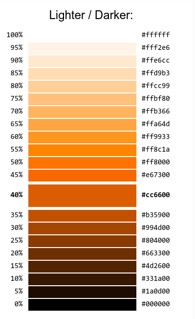
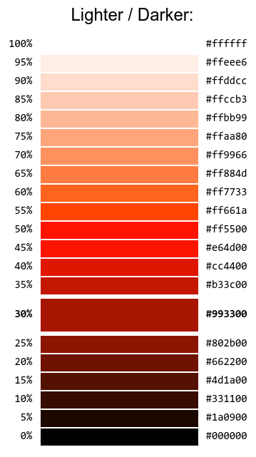
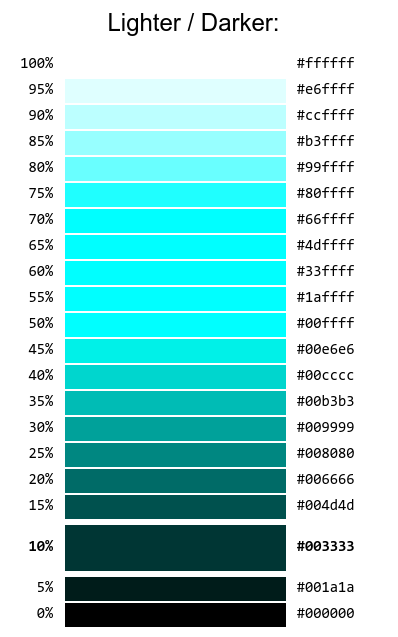
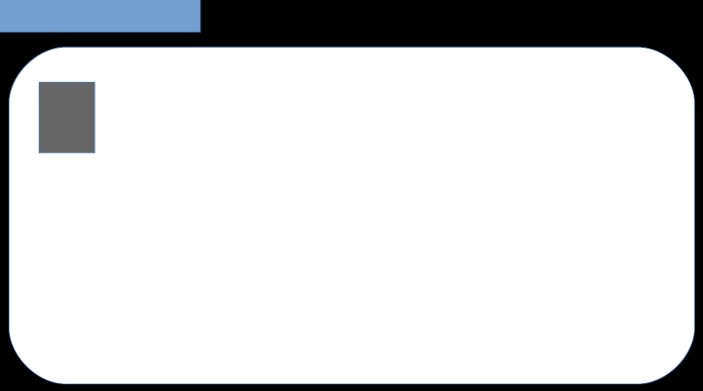
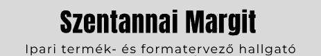
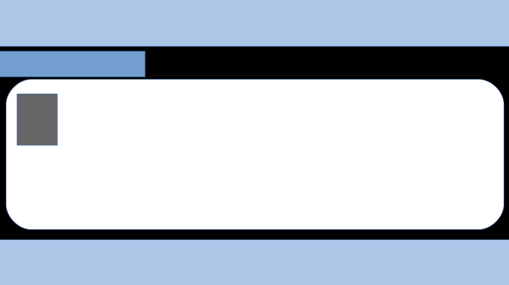
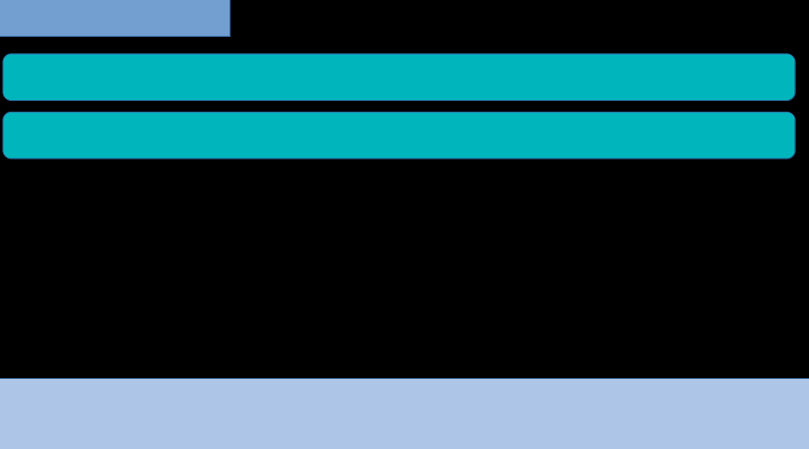

Az oldal története
A honlap tervezésénél az első lépés az volt, hogy leírtam mit szeretnék megjeleníteni. Összeírtam a tartalmat egy füzetbe. Ezekután elkezdtem keresgélni az interneten, és találtam olyan honlapokat, ahová csak a tartalmat kell beilleszteni és kész is van a honlapod. Ezek nekem nem tetszettek, számomra azok túl zsúfoltak voltak. És ezzel kialakult bennem az, hogy egy letisztultabb honlapot szeretnék, ahol könnyű kiigazodni. A laborvideók megnézése után, amiket igyekeztem közben minnél jobban áttanulni, kialakult bennem egy kép, hogy körübelül mit tudok megcsinálni. Mivel eddig csak Imagine Logo-t használtam (azt se sok sikerrel), kis kiegészítéssel csak azt tudom amit az órákon programoztunk, tehát ezekből építkeztem. Elösször a színeket akartam meghatározni, hogy milyen lesz az oldal hangulata, tehát azt az
oldalt
hívtam segítségemül amit az órán is ajánlottak. Úgy gondoltam az lenne a legjobb ha egy színskálát használnék, ezek jöttek szóba:



(mindegyiken az van kijelölve amelyik szín legjobban tetszett az adott skálán). A harmadikat választottam, mivel az a kedvenc színem. Majd elkezdtem az Otthon oldalt megtervezni, azon belül pedig a menüsávot. Elsőre így akartam megjeleníteni:
de jobbnak láttam, ha a menüsávban is látható, hogy az ember épp melyik oldalon van. Már az elején tudtam hogy szeretnék egy rövid bemutatkozó szöveget a kezdő oldalra, ami mellé beillesztem a tablóképemet is. Ekkor így képzeltem el a honlapomat:

Ezután jöttem rá, hogy szeretnék a legelejére, mint egy névjegykártyát, valamit odaírni, röviden, hogy ki vagyok, mit csinálok. Ez eleinte egy felirat lett volna,

de később meggondoltam magam, és azt szerettem volna, hogy valami logo szerűt készítsek magamnak és azt illsztsemem be. Ez lett a végleges változatban is. Ennek az elkészítésével nagyon sok időt töltöttem.
A Hobbijaim fül szerkesztése végén jöttem rá, hogy szeretnék, egy footert, ami jelzi az olvasónak, hogy elérte a tartalom végét (ez eredetileg az oldalalján szerepelt volna, azonban rájöttem hogy logikusabb( szerintem), hogy a tertalom alján van). A képet itt is megszerkesztettem, kivettem mögüle a hátteret, ahogy sok másik képnél is, nekem így sokkal jobban tetszenek. Így alakult ki a kezdő oldalnak a végleges kinézrte:

A hobbijaim, iskolák fül kinézete:

Nagy nehézséget jelentet, a lenyíló részek elkészítése, azt nagyon sokáig nem értettem meg, hogy hogyan kell formázni, de a kód, és a videó alapján összeraktam.